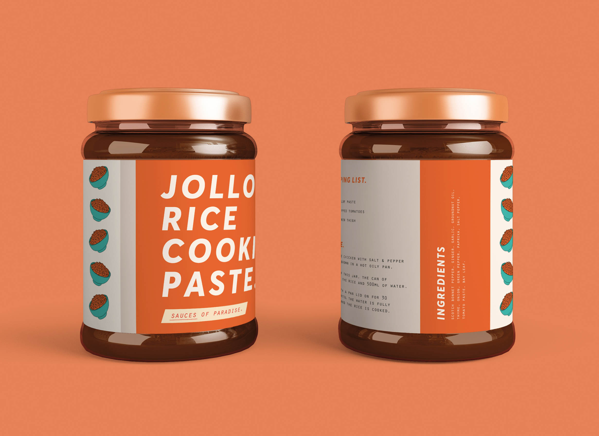

Food of
Paradise.
we’re all eating jollof rice tonight!
| project type | skills used | key words |
| Independent University Project | Branding / Packaging Design / Illustration | West Africa / Food / Culture |
| let’s talk about food | one |
|---|---|
| West African food is widely unavailable in most British supermarkets. Many ingredients can only be found in specialist shops, rendering it inaccessible to many consumers who will never be given the opportunity to discover this rich culinary culture themselves. | |
| let’s talk about food | two |
|---|---|
| This project was one strand of a wider project examining how West African food could be successfully introduced into mainstream British taste. View its sister project here. | |
Talking through the universal language of food.
| perception vs. culture | one |
|---|---|
| Without access to cultural outputs from West Africa, along with negative portrayals in film and on television, negative perceptions of the region can flourish. Fascinated by the link between the way we access and enjoy the food of other cultures and how we view those cultures outside of their culinary produce, I began researching how creating accessible, mainstream brands for West African food products in the UK could help to create more positive perceptions of the region. | |

| getting familiar | one |
|---|---|
| Food of Paradise is a brand inspired in name by 'grains of paradise', an ingredient prevalent in West African cooking, but seldom found in British shops. It uses illustration inspired by pagne prints, an unusual colour palette and bold typography to encourage an unfamiliar audience to try something new. | |
| getting familiar | two |
|---|---|
| The brand is carefully designed to reduce potential feelings of alienation or fear the audience may experience when trying totally unfamiliar food. Each product's packaging contains shopping lists, recipes and a light-hearted tone of voice to encourage the potentially wary audience to give West African food a try. | |


| outside of the brand | one |
|---|---|
| Beyond simply introducing a new audience to West African food, the brand seeks to create direct connections between the British public and West African identities and economies in a tangible way. One advertising campaign, for example, allows the audience to win a trip to a villa holiday in Lagos, helping to generate excitement surrounding the potential for tourism in West Africa. | |